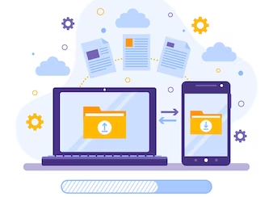

The Key To Simplified Office 365 Migration All In One Tool
The digital age has changed the way we do business. Organizations large and small are increasingly turning to cloud-based solutions to improve their operational efficiency and maximize their cost savings. Office 365 is a popular choice for many organizations, but the migration process can be a daunting and time-consuming task.
To make the transition smoother and simpler, an all-in-one migration tool is essential. This blog post will explore the benefits of using a seamless office 365 tenant all-in-one migration tool for a successful migration.
Organizations of all sizes can benefit from the convenience and cost savings of a cloud-based solution. However, the transition from on-premise to cloud-based can be complex and time-consuming. This is especially true when a tenant-based solution like Office 365 is chosen. Office 365 tenants are typically large and complex, and require a specialized all-in-one migration tool to ensure a successful transition.
The Microsoft Office 365 migration tool helps you to migrate folders, files, contacts, tasks, emails, calendars, notes, journals between tenants of Office 365. The incremental migration prevents duplication of email messages, while ensuring that mailbox consistency is maintained during the migration process. It can handle complex cloud migration tasks with ease and provides you with a consistent migration experience.
Office 365 Migration:

Office 365 migration can be made without extensive technical experience through the use of a tool. The tool simplifies email directory and folder selection and enables you to migrate mailboxes, Public folders, Archive, and Shared Mailboxes effortlessly from the source to the target server. You can migrate between Office 365 servers in the source or different domains in a few clicks.
Streamline On-Premise Exchange With Office 365:
Microsoft's Office 365 migrator can help you migrate emails from Exchange servers running from 2007 through 2019 to Office 365. Update older Exchange servers to Office 365 or move mailboxes from Microsoft Small Business Server to Microsoft 365, from a user-friendly interface.
1. Migration To Hosted Office 365:
Migration from Hosted Office 365 servers such as GoDaddy, Rackspace, Comcast, Bluehost, Intermedia Hosted Exchange, and enables seamless mailbox data transfer between the tenants. It can map the mailboxes and folders, and quickly migrate mailboxes without disrupting your company operations.
2. Effortless Office 365 Migration: Guaranteed Safe And Secure:
Several programs migrate from legacy platforms to Office365 without losses of data or downtime.
3. Modern Authentication Securely Protects:
Microsoft APIs can be used to facilitate the movement of tenants in the Office 365 tenant-to-tenant migration process. It is ISO 27001:2013 certified and supports Office 365 modern authentication, using OAuth 2.0. Your credentials are never stored on its servers and are protected by OAuth 2.0 and TLS encryption during migration.
4. Do Not Lose Data While Migrating:
Microsoft 365 migration restarts automatically when it encounters problems related to reconnecting, and can resume uninterrupted migration after the conditional wait time After that connection is back. You can also cancel and continue your migration operation without having to worry about data loss, downtime, or upending your user data.
5. In Any Migration, There Is No Need To Work With Third Parties:
Your migration tool for Office 365 will not require any third-party components and will allow you to make the migration with full control over your data. The migration application is installed in the specific location selected during the heaving Office 365 move and is done between the source and target servers.
6. Consistent Office 365 migration:
Create an Office 365 migration by means of a replica of the source data on your destination server and maintain 100 data consistency during the move. During the migration process, your application preserves your exact folder hierarchy and data formatting without modifying your folder contents.
How To Choose The Best Office 365 Migrations Solution:
Office 365 migration helps facilitate the acquisition of businesses. It allows you to migrate Office 365 mailboxes, SharePoint, OneDrive sites, Microsoft Teams, Meetings, SubTeams, Files between different tenants.
You can perform automated migrations for Office 365 Public folders, for In Place Archive and Public folders to Shared mailbox, or export mailboxes to Outlook PST from a user-friendly interface.
- Execute Cutover, staged, hybrid exchange, and Office 365 migration.
- Migrate room and office space mailboxes among Office 365 tenants.
- Take control of mailboxes as well as SharePoint sites with automatic impersonation rights.
- For Microsoft 365 Groups and mail-enabled Public folders that allow migrations, navigate to permissions.
In conclusion, the Seamless Office 365 Tenant All-in-One Migration Tool is a great solution for organizations looking to move their entire Office 365 tenant from an on-premises or cloud-based environment to a single, unified platform. With its comprehensive features, automated migration capabilities and step-by-step guidance, the tool makes the transition process quick and easy. Furthermore, its security protocols ensure data integrity, reliability and compliance with industry standards and regulations.